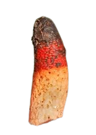
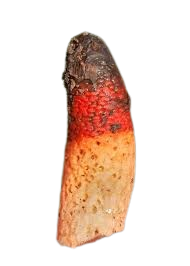

Descripción morfológica
Mutinus caninus, conocido como "falo de perro" o "hongo ciervo", es una especie llamativa de la familia Phallaceae. Comienza su desarrollo como un "huevo" blanquecino de 2-3 cm de diámetro, del que emerge posteriormente un receptáculo esponjoso de 8-12 cm de altura, de color rosa salmón a naranja intenso en la madurez. La punta está cubierta por una gleba verde-oliva viscosa y maloliente. A diferencia de otros fálidos, no tiene un sombrero diferenciado sino una punta cónica aguda.
Características distintivas
- Gleba: Masa esporífera con olor a excremento (contiene dimetil trisulfuro) que atrae moscas y escarabajos coprófagos.
- Estructura: Receptáculo hueco con paredes alveolares, frágil al tacto.
- Esporas: Elípticas, lisas, de 3.5-5 × 1.5-2 µm, transportadas por insectos.
- Huevo: Peridio gelatinoso que se rompe en volva irregular en la base.
Distribución y hábitat
Especie común en bosques caducifolios de Europa y Norteamérica, especialmente bajo hayas (Fagus) y robles (Quercus). Prefiere suelos ricos en humus, con abundante madera en descomposición. Fructifica desde finales de primavera hasta otoño, a menudo en grupos de 3-10 individuos. Su presencia indica ecosistemas forestales maduros con baja perturbación humana.
Condiciones ecológicas
- Sustrato: Madera enterrada o en avanzado estado de descomposición.
- Microclima: Requiere humedad constante y temperaturas entre 12-20°C.
- Asociaciones: Frecuentemente aparece junto a Phallus impudicus, aunque es más pequeño y delicado.
Ciclo de vida y estrategia reproductiva
El micelio permanece años en la madera muerta antes de producir "huevos" subterráneos. Tras lluvias, el receptáculo emerge rápidamente (4-6 horas), alcanzando su altura máxima al amanecer. La gleba atrae insectos durante 12-24 horas, tras lo cual se seca y el hongo colapsa. Las esporas germinan tras pasar por el tracto digestivo de los insectos vectores, principalmente moscas de la familia Calliphoridae.
Etapas clave
- Fase de huevo: Dura 7-10 días; interior con estructura de "panal de abeja".
- Emergencia: El receptáculo crece a ~1 mm/minuto, guiado por fototropismo.
- Senescencia: En 48 horas se descompone, dejando solo la base gelatinosa.
Importancia ecológica y cultural
- 🔄 Reciclador: Acelera la descomposición de lignina en suelos forestales.
- 📚 Historia: Citado en herbarios del siglo XVI como "Fungus virilis parvus".
- 🔬 Estudios: Modelo para investigar quimiotropismo en hongos.
- ⚠️ Toxicidad: No es mortal pero puede causar molestias gastrointestinales.
Datos fascinantes
- Nombre común: "Falo de perro" alude a su parecido con el pene canino (nombre científico lo confirma).
- Arte: Aparece en grabados medievales como símbolo de fertilidad.
- Expansión: Introducido en Norteamérica con plantas ornamentales en el siglo XIX.
- Variabilidad: Forma albina (M. caninus var. albus) rara pero documentada.
Interacciones y precauciones
Aunque no es peligroso, se recomienda:
- Evitar manipulación directa (el olor persiste en manos).
- No confundir con huevos de Amanita (cortar siempre para ver estructura interna).
- Lavar manos tras observación para eliminar esporas residuales.
Conservación
- Proteger bosques maduros con madera muerta en descomposición.
- Evitar recolectar ejemplares (fotografiar in situ).
- Reportar avistamientos a sociedades micológicas locales.
Técnicas de observación
- Momento ideal: Amanecer en días húmedos de verano/otoño.
- Equipo: Linterna para observar la gleba brillante.
- Fotografía: Usar ángulo lateral para resaltar la forma fálica.